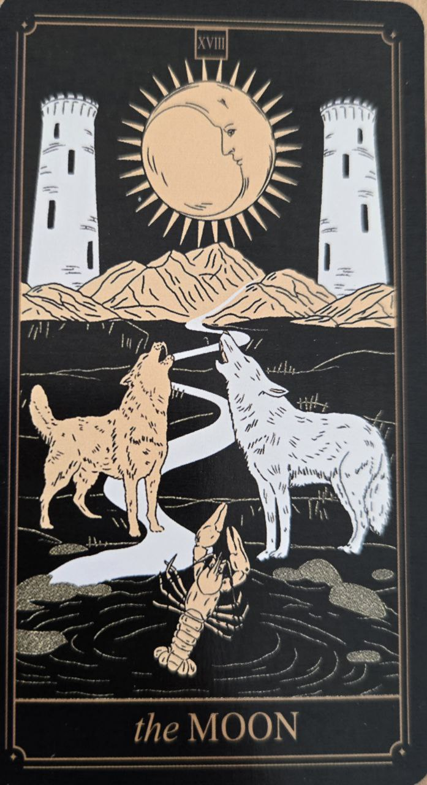

Mesiac je kartou intuície, neistoty a skrytých vrstiev reality. Predstavuje situácie, v ktorých nie sú všetky informácie viditeľné na prvý pohľad.
Táto karta nás pozýva skúmať vlastné pocity, sny a podvedomé procesy.
Mesiac symbolizuje neistotu, predstavivosť a hľadanie pravdy za zdanlivým obrazom.
Naznačuje obdobie, keď je dôležité počúvať intuíciu, ale zároveň si uvedomovať možné ilúzie.
Na karte býva mesiac osvetľujúci cestu medzi dvoma vežami. Táto cesta vedie do neznáma a symbolizuje vnútorné objavovanie.
Voda predstavuje podvedomie a emócie.
Mesiac neprináša jasné odpovede. Namiesto toho ukazuje, že niektoré veci je potrebné postupne odhaľovať.